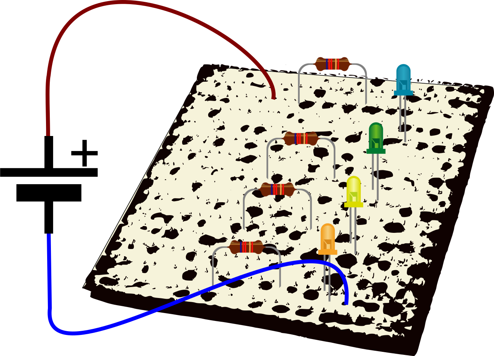
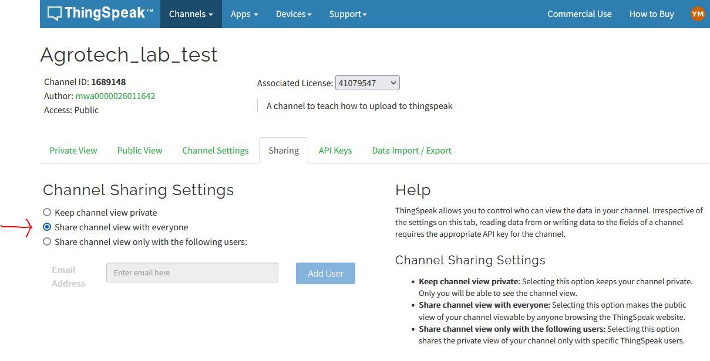

An oportunity to play and get started before the big final project.

Some guidelines
In this project each one of you will individually create a Thingspeak channel and will upload to it data from an ESP32.
Minimal requirements: * Measure temperature (using SHT31) * Measure humidity (using SHT31 or BME280) * Calculate VPD * Make use of at least one more “unique” sensor
Deadline
All Chanels must be live by the 28th of April.
The name of the channel MUST be spelled with the prefix “Passover_2022_” and then your first and last name with separated by an underscore.
For example: `Passover_2022_Erez_Feuer
You MUST provide information regarding your channel in the “description” section which can be found under “channel settings”. This information should include: * location (e.g.: balcony in Rechovot, kitchen in Gan-Yavne, 7th floor bedroom window, etc.), * what the sensors are measuring (including the “unique” sensor/s), and * any other information that you find relevant - the more the better.
Upload interval should be at least every 3 minutes (not longer). Please don’t upload every second if there is no justification (for example the humidity in the bedroom will change slowly, so no need for rapid measurments).
Public view
We will be monitoring your Thingspeak channels via the “Public view” section. It is very simple to make your channel public, just check “Share channel view with everyone” under the Sharing tab as you can this in the following image:

How to power your projects
Once the code is uploaded to the ESP32 and every thing works fine, you don’t need your computer anymore, and can use a generic USB charger as a power supply. Don’t worry about the code, it will work as long as the ESP32 has power, because you already uploaded the code to memory.
Calculate VPD
The Vapor Pressure Deficit (VPD, in kPa) is the difference between saturation vapor pressure \(e_s\) and actual vapor pressure \(e_d\):
\[\text{VPD} = e_s - e_d.\]
For temperatures ranging from 0 to 50 °C, the saturation vapor pressure can be calculated with
\[ e_s = \exp \left[ \frac{16.78\, T -116.9}{T+237.3} \right], \]
and the actual vapor pressure is given by
\[ e_d = e_s \frac{RH}{100}, \]
where \(RH\) is the relative humidity (%), and the temperature \(T\) in the equations above is in degrees Celcius.